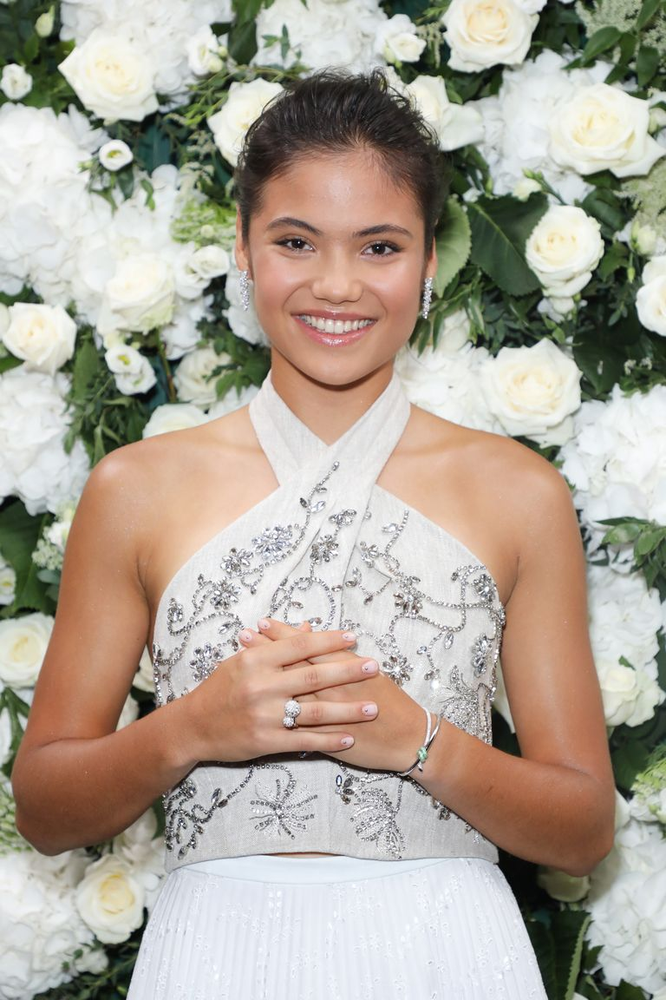

emma raducanu
une bouffée d'air frais
Raducanu forehand focus
Emma Raducanu first came under the spotlight when she made it through the first three rounds of the Wimbledon tennis Open 2021 as a youngster playing in her first grand slam.
Only a few months later, she took the world of tennis by storm She went from the qualifying rounds all the way to the final to win the championship, and this without dropping a single set. The final was broadcast for free in the UK which meant that millions were able to see live the winning by a british of their first women grand slam in 44 years. at the US tennis Open 2021.
If that wasn't enough, Emma is also an A student, speaks three languagesEnglish, Chinese, Romanian and is eloquent and courteous. No wonder she has sparked a worldwide frenzy around her persona as evidenced by her being the new face of TiffanyThe tennis superstar is the latest to join the ranks of Hollywood’s elite as an ambassador for the luxury jewellery brand
But the appeal she has that cuts through barriers may be due to her unique backgroundShe was born in Canada from a Romanian father and Chinese mother and calls UK, where she moved when she was very young, home. and in those days of global pandemy and tensions, this eighteen year old has been a breath of fresh air.
The multi-faceted Emma Raducanu is the poster child for interconnected worlds. If she goes on to show that her feat was no fluke and wins one slam after another, her arrival on the world stage may prove to have been one more telltale sign of the times to be.
"My parents were pretty tough on me when I was young but it kind of shaped the way I think now and it's helping me on the biggest stages in the world when you really need it. Arthur Ashe Stadium was basically full capacity - so it was very, very cool."
--Emma Raducanu